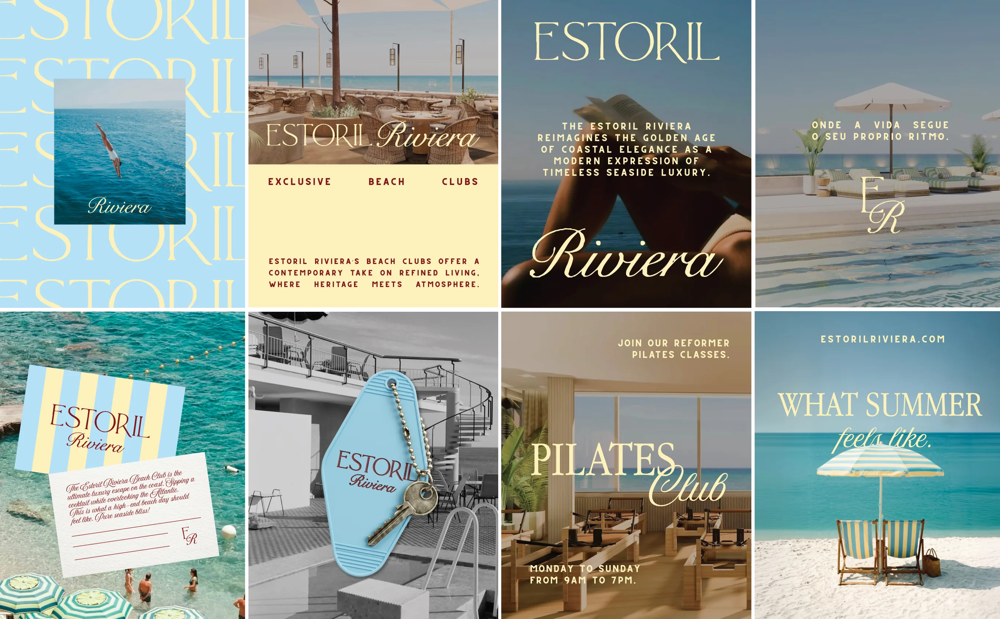
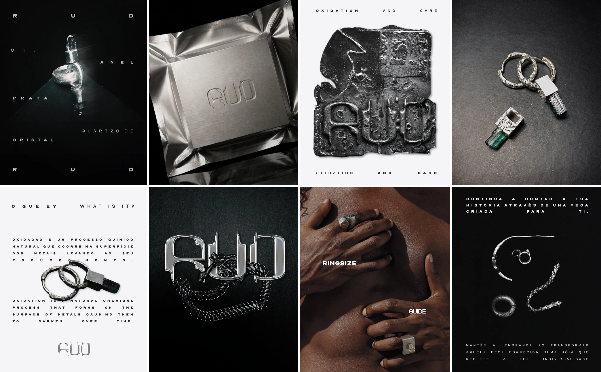
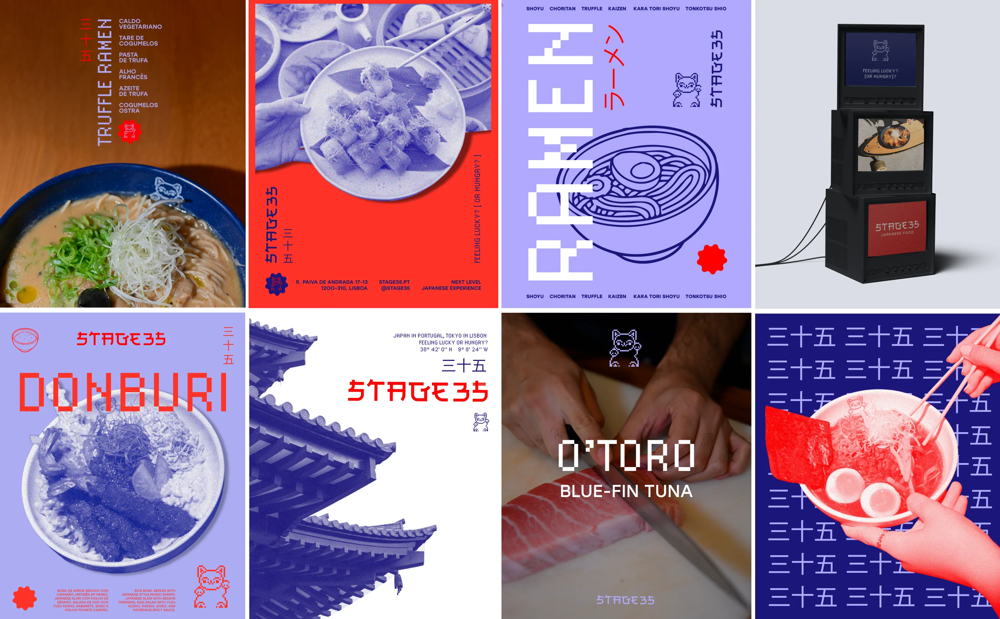

A social media rebranding proposal for Estoril Riviera, inspired by the timeless beauty of the Mediterranean coast. The visual direction draws from the effortless elegance of the Italian Riviera, translating a lifestyle shaped by culture, architecture, and calm into a contemporary digital presence. The aim was to create a refined and aspirational social identity rooted in the idea of coastal living.

A social media rebrand for RUD, a contemporary jewellery brand defined by a dark aesthetic and strong silver contrasts. Building on the brand’s existing logo and visual language, I developed a more cohesive digital identity across the platform. The result combines bold compositions, contrast, and a darker visual direction to reflect the brand’s contemporary character.
For Sanjugo, I explored several creative directions for social media, all built around a playful and fun approach. The visual language reflects the brand’s straightforward attitude towards food: easy, casual, but full of flavour. The different concepts focused on creating an engaging digital presence with a strong sense of personality.

A new social media strategy developed to support the launch of Stage35’s new space. The visual direction introduces a more contemporary identity inspired by Asian culture, balancing refined food with a playful and approachable atmosphere.
Social media direction and campaign design for Sumol Summer Fest 25, a Portuguese trap and hip-hop summer festival. The project included animated artist announcements, social media campaigns, audience engagement content, and promotional assets designed to build anticipation around the festival. Alongside the digital campaign, I also developed illustrations for merchandise and the festival poster, extending the visual identity beyond social media.